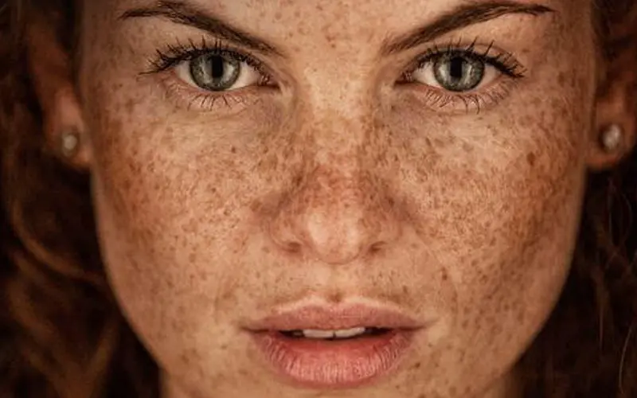
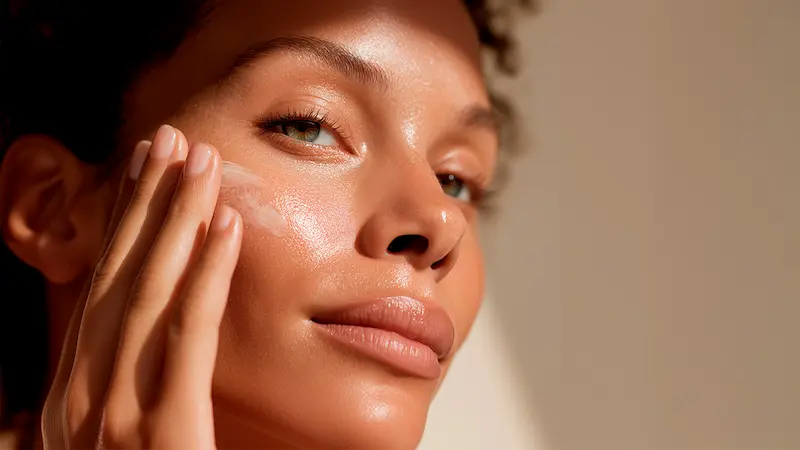
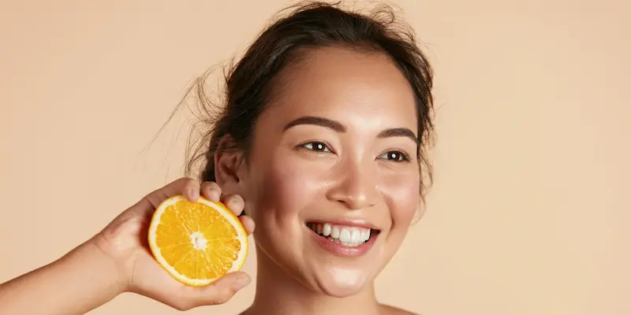

Что такое гиперпигментация и почему она появляется?
Гиперпигментация — это избыточное скопление меланина в определенных участках кожи, которое проявляется в виде темных пятен разного размера и формы. Это не просто косметический дефект, а сигнал о том, что клетки-меланоциты находятся в состоянии хронического стресса и работают в режиме гиперреактивности.
Важно понимать: пигментация, появившаяся один раз, имеет свойство «возвращаться». В Молдове, где солнечный индекс (UV Index) летом достигает экстремальных значений, даже короткая прогулка без защиты может спровоцировать мелазму или усилить веснушки. Без системного контроля над синтезом меланина пятна становятся глубже, а их границы — четче, что значительно усложняет последующую терапию.
Причины появления пятен: от палящего солнца до гормонального фона
Основным триггером выступает агрессивное ультрафиолетовое излучение, которое запускает каскад окислительных реакций. Однако пигментация — это мультифакторный процесс. Помимо солнца, ключевую роль играет «поствоспалительная пигментация»: в условиях городской пыли Кишинева любые микроповреждения кожи или акне часто заживают, оставляя после себя стойкие темные следы, от которых трудно избавиться.
Критическим фактором для нашего региона является сочетание высокой инсоляции и индустриального загрязнения. Синий свет (HEV-излучение) гаджетов и смог усиливают выработку свободных радикалов, которые буквально «окисляют» меланин, делая пятна более темными и серыми. Правильная стратегия борьбы с пигментацией в 20–40 лет должна базироваться не на агрессивном отбеливании, а на блокировании тирозиназы и мощной антиоксидантной поддержке.

Основные правила борьбы с гиперпигментацией
Ключевые ингредиенты для ровного тона кожи
| Ингредиент | Действие против пигментации |
|---|---|
| Транексамовая кислота | Мощный компонент, который блокирует сигнал о выработке меланина, особенно эффективен при мелазме и постакне. |
| Витамин С (L-аскорбиновая) | Осветляет существующие пятна, подавляет окисление меланина и придает коже здоровое «молдавское» сияние. |
| Ниацинамид (B3) | Препятствует переносу пигмента в верхние слои кожи, сужает поры и укрепляет защитный барьер. |
| Азелаиновая кислота | Золотой стандарт при поствоспалительной пигментации: мягко осветляет, не раздражая чувствительную кожу. |

Ошибки, усиливающие гиперпигментацию
Как добиться идеально ровного тона?
Секрет чистой кожи без пигментации заключается не в разовом «стирании» пятен лазером, а в постоянном контроле над меланогенезом. Гиперпигментация — это хроническое состояние, которое требует дисциплины в уходе и понимания того, как кожа реагирует на внешние раздражители.
Для достижения стойкого результата используйте схему: утром — блокировка внешних факторов (антиоксиданты + SPF 50), вечером — коррекция и обновление (ингибиторы тирозиназы, ретинол или кислоты). Такой подход позволит не только осветлить уже существующие участки, но и «усыпить» активные меланоциты, возвращая лицу свежий, отдохнувший вид и естественное сияние.

Протокол борьбы с пигментацией: Утро vs Вечер
Для устранения пятен важно разделить рутину на две фазы: защиту от активации меланина днем и интенсивное осветление в ночное время.
| Время суток | Этап ухода | Почему это необходимо? |
|---|---|---|
| Утро | Антиоксиданты + SPF 50+ (PA++++) | Блокирует УФ-сигналы, которые заставляют меланоциты вырабатывать пигмент, и предотвращает потемнение пятен. |
| Вечер | Ингибиторы тирозиназы / Ретиноиды | Транексамовая кислота или ретинол замедляют синтез пигмента и ускоряют обновление клеток для «вывода» пятен. |
| Уход (ежедневно) | Ниацинамид / Успокаивающий крем | Снимает микровоспаления, которые являются скрытой причиной появления новых пигментных участков. |
| SOS-уход | Пилинги с AHA-кислотами / Маски с Витамином С | Деликатное отшелушивание ороговевших клеток, нагруженных меланином, для мгновенного выравнивания тона. |
Совет для Молдовы: В периоды экстремальной жары (июль-август) в Кишиневе и южных регионах выбирайте SPF с пометкой "Anti-Dark Spot". В нашем климате обычного увлажняющего крема с SPF 15 недостаточно — для борьбы с пигментацией необходим полноценный санскрин.
Городская среда и "грязная" пигментация
В городах Молдовы сочетание смога и жесткого ультрафиолета создает эффект «окислительного стресса», который делает пигментные пятна более стойкими и темными. Мелкие частицы пыли (PM 2.5) проникают в поры и усиливают воспалительные процессы, провоцируя появление возрастной пигментации даже у молодых женщин.
Защита от цифрового старения (синего света гаджетов) также критична: HEV-лучи проникают в дерму глубже, чем UV-лучи, и вызывают стойкую мелазму. Двойное очищение вечером и использование косметики с анти-поллютант эффектом помогут прервать цикл образования пятен и вернуть коже ровный, сияющий фарфоровый оттенок.
Часто задаваемые вопросы о гиперпигментации
Можно ли полностью и навсегда убрать пигментные пятна?
Многие формы пигментации, такие как постакне, поддаются полной коррекции. Однако мелазма и возрастное лентиго требуют пожизненного контроля. В условиях высокой инсоляции Молдовы даже один день на солнце без защиты может вернуть пятна, которые вы выводили месяцами. Ключ к успеху — блокировка синтеза меланина и строгая дисциплина.
Какие процедуры в клиниках Кишинева наиболее эффективны?
Для быстрого результата специалисты в Молдове часто рекомендуют IPL-терапию (фотолечение) или лазерное удаление пигмента. Однако аппаратные методики должны обязательно дополняться домашним уходом с ингибиторами тирозиназы (транексамовая кислота, арбутин). Без подготовки кожи лазер может спровоцировать «рикошетную» гиперпигментацию.
Почему пятна становятся ярче осенью, когда солнца уже меньше?
Это результат накопленного повреждения за лето. В Молдове пик солнечной активности приходится на июль-август, но меланин поднимается к поверхности эпидермиса постепенно. К сентябрю скрытые повреждения становятся видимыми темными пятнами. Именно поэтому осень — идеальное время для введения в рутину активных осветляющих сывороток и пилингов.
Нужен ли SPF 50 зимой в условиях нашего региона?
Если вы боретесь с пигментацией, SPF 50 обязателен даже в пасмурный кишиневский февраль. UVA-лучи, ответственные за активацию меланоцитов, активны круглый год и проникают сквозь облака и оконные стекла. Для надежной блокировки меланогенеза защита должна быть непрерывной 365 дней в году.